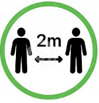

<ion-header>
  <ion-toolbar>
    <ion-title>
      COVID-19
    </ion-title>
  </ion-toolbar>
</ion-header>

<ion-content>
  <div class="top">
    <!-- Ask and get data to storage -->
    <div class="title ion-margin">
      <h2>Are you feeling sick?</h2>
      <ion-list>
        <ion-radio-group [(ngModel)]="myStatus">
          <ion-item>
            <ion-label>Yes</ion-label>
            <ion-radio value="On risk"></ion-radio>
          </ion-item>
          <ion-item>
            <ion-label>No</ion-label>
            <ion-radio value="Healthy"></ion-radio>
          </ion-item>
        </ion-radio-group>
      </ion-list>
      <!-- Get data and forward to next page to output status -->
      <ion-button (click)="saveStatus()">Check Status</ion-button>
    </div>
  </div>
  <!-- Prevention information -->
  <div class="middle">
    <h3>Prevention</h3>
    <div class="content">
      <ion-row>
        <ion-col size="4">
          
          <p>Avoid close contact</p>
        </ion-col>
        <ion-col size="4">
          
          <p>Clean your hands often</p>
        </ion-col>
        <ion-col size="4">
          
          <p>Wear a facemask</p>
        </ion-col>
      </ion-row>
    </div>
  </div>
</ion-content>
